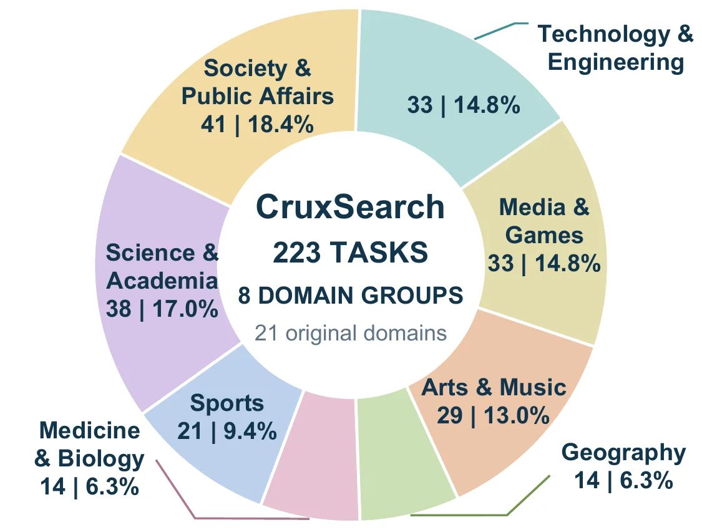
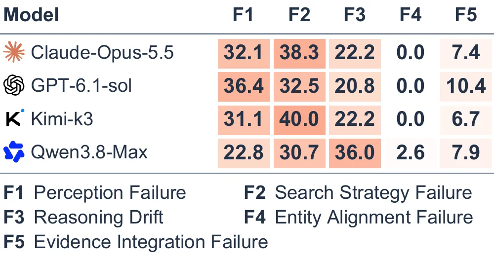

Correction
59 tasksA plausible local edit alters an externally documented fact. The agent locates the edit and recovers the original content from external records.
1Huawei 2Beijing Institute of Technology
Multimodal search agents gather evidence from the open web and reason over incomplete observations. While recent benchmarks heavily involve image retrieval and inspection, visual evidence often serves as a superficial component rather than a driver for compositional or cross-modal validation reasoning. As a result, agents can succeed without intensive reasoning, leaving intermediate inference untested. To bridge this gap, we introduce CruxSearch, a benchmark of 223 tasks featuring a Reasoning-in-the-Loop design that demands intensive reasoning throughout the search process. The benchmark spans four task families: Correction, Reduction, Clue Unification, and X-View Closure. These tasks respectively involve correcting factual image edits through web-based verification, narrowing candidate sets via visual constraints, connecting independent clues through shared entities or events, and aligning complementary views. Experiments across 19 proprietary and open-source models show that current agents remain far from solving reasoning-intensive multimodal search, with even the top-performing Claude-Opus-5.5 achieving only 62.78% accuracy. These results underscore persistent challenges in iterative visual seeking, candidate refinement, and cross-modal verification. Our benchmark and evaluation code will be publicly released.
Every CruxSearch task places a reasoning crux between the available evidence and the answer. Two complementary kinds of inference carry the agent across it.
The agent assesses what its evidence already establishes, identifies the remaining gap, and decides which objects, viewpoints, or search directions to pursue when the needed cue is out of reach of a direct web search.
The agent interprets partial views, cross-validates sources, separates competing candidates, and infers spatial or implicit relations.
In the example, the stage design and the speaker backdrop each match several environmental events. Checking both constraints against retrieved photographs isolates Eco Expo Asia, and an aerial view of its venue supplies the answer.
Each task provides a question and any accompanying images. The agent searches the open web, visits sources, and inspects images; each family requires a distinct intermediate conclusion that directs further retrieval or connects retrieved evidence to the answer.
A plausible local edit alters an externally documented fact. The agent locates the edit and recovers the original content from external records.
Visually verifiable constraints separate a target from competing candidates that share its appearance or venue context.
Two image clues meet at an unnamed shared entity or event. Recovering this hub anchors the retrieval of the answer-bearing image.
The input view hides the queried detail. The agent locates the target in a complementary view through spatial correspondence.
| Benchmark | Search setting | Evidence operation | ||||
|---|---|---|---|---|---|---|
| Open-web search | Multi-branch search | Factual correction | Candidate reduction | Clue unification | Cross-view alignment | |
| MMSearch | ✓ | ✗ | ✗ | ✗ | ✗ | ✗ |
| MMBC | ✓ | ✗ | ✗ | ✗ | ✗ | ✗ |
| VDR-Bench | ✓ | ✗ | ✗ | ✗ | ✗ | ✗ |
| MMSearch-Plus | ✓ | ✗ | ✗ | ✓ | ✗ | ✗ |
| MC-Search | ✗ | ✓ | ✗ | ✓ | ✗ | ✗ |
| InterLV-Search | ✓ | ✓ | ✗ | ✓ | ✗ | ✗ |
| CruxSearch | ✓ | ✓ | ✓ | ✓ | ✓ | ✓ |
✓ / ✗: task requirement specified / not specified in the original paper.

Each pipeline starts from a source-supported target and builds the evidence relation needed to recover it. Correction, Reduction, and Clue Unification use model-assisted pipelines that retain retrieval records and intermediate decisions; X-View Closure is curated manually with correspondence checks and a search-based difficulty probe.
Family-specific checks reject directly recoverable originals or conspicuous edits (C), nonselective constraints (R), disclosed hubs (U), and directly visible answers (X).
From 425 seeds, the automatic pipelines produce 931 candidate groups and 699 questions, and 342 pass reference-chain validation: an agent retrieves evidence for every named checkpoint and recovers the answer without seeing the target image or label.
Fifteen experts with PhDs verify every task. Reviewers other than its creators revisit key sources, reproduce the inferences, and record their answers before comparing them with the reference. The benchmark keeps 200 automatically and 23 manually constructed tasks.
Accuracy (%) over all 223 tasks and per task family, and mean interaction turns per task. All models run the same ReAct agent with a 50-turn limit and tools for web search, webpage fetch, text-to-image search, reverse image search, and image cropping. A DeepSeek-v4.1-Flash judge scores answers at temperature 0.
| # |
|---|
Click a column heading to sort. Bold marks the best accuracy among the models shown. C: Correction, R: Reduction, U: Clue Unification, X: X-View Closure; family accuracy uses the full family size as denominator.
With the backbone fixed, CruxSearch shows the largest accuracy gain among four benchmarks for both Qwen3.8-Max and GPT-6.1-sol. Raising Qwen3.8-Max from a 4k to a 256k thinking budget adds 15.70 points on CruxSearch, against 0.32 on MMSearch-Plus and 3.00 on BrowseComp-V3. GPT-6.1-sol gains 12.56 points from Low to Max effort.
Resolving the crux tracks success: on 100 shared Reduction and Clue Unification tasks, trajectories that resolve it are 40.1 points (Qwen3.8-Max, 16k) and 19.8 points (Claude-Opus-5.5, Max) more accurate.
At higher settings, Qwen3.8-Max and Claude-Opus-5.5 both retrieve pages, crop images, and run reverse-image search more often per turn while issuing fewer web queries. Cropping becomes Claude-Opus-5.5's most frequent tool at Max effort.
Correction and X-View Closure keep the largest shares of tasks that no tested setting solves: 42% and 35% for Claude-Opus-5.5.
Across 362 incorrect responses from four models, search-strategy failures lead for Claude-Opus-5.5 and Kimi-k3, perception failures for GPT-6.1-sol, and reasoning drift for Qwen3.8-Max. These profiles separate choosing relevant evidence, reading observations, and keeping conclusions grounded in that evidence.

@misc{huang2026cruxsearch,
title = {CruxSearch: Benchmarking Reasoning-Intensive Multimodal Agentic Search},
author = {Huang, Li and Tao, Eric and Sun, Minhao and Liu, Liyan and Wu, Zhijing and Yu, Xiaohan and Mei, Lang and Feng, Chao and Ma, Jinchao and Kang, Sichen and Mo, Siyu and Ma, Ziao and Wang, Ying and Chen, Chong},
year = {2026},
howpublished = {\url{https://cruxsearch.github.io}}
}